Create a project - https://help.apple.com/xcode/mac/current/#/dev07db0e578
Build and run your app - https://help.apple.com/xcode/mac/current/#/devdc0193470
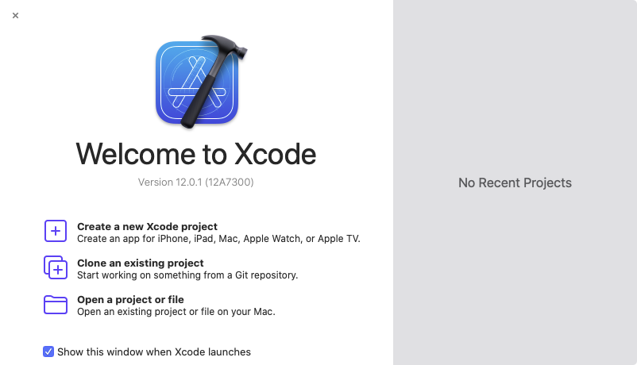
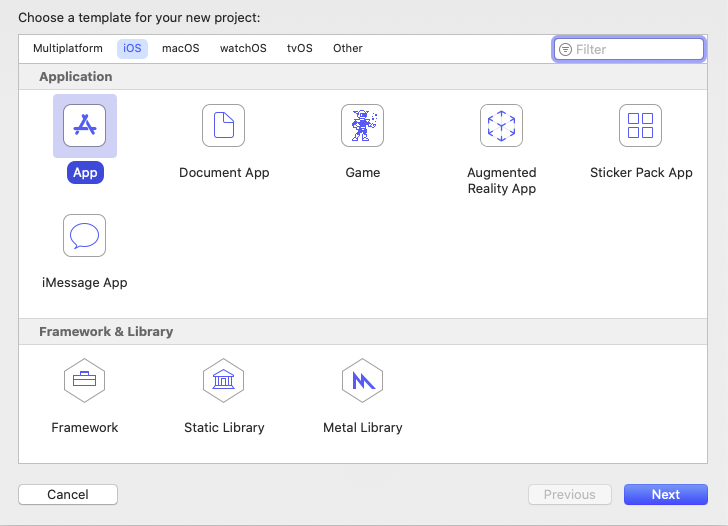
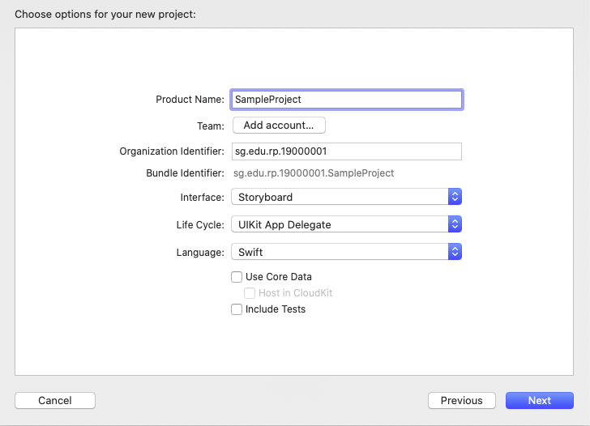
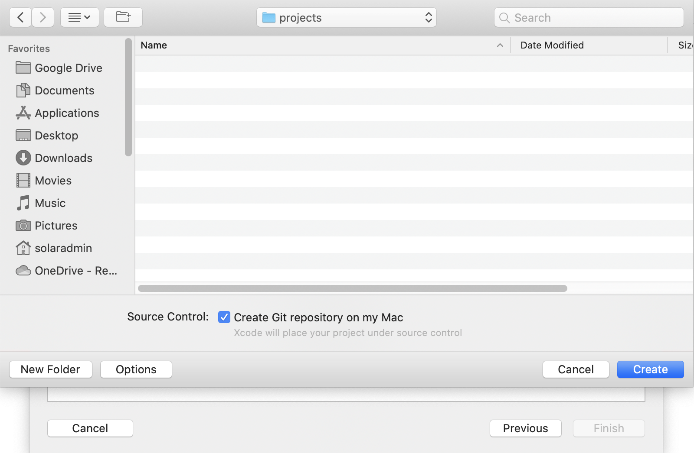
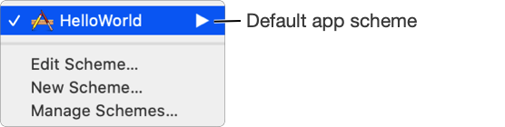
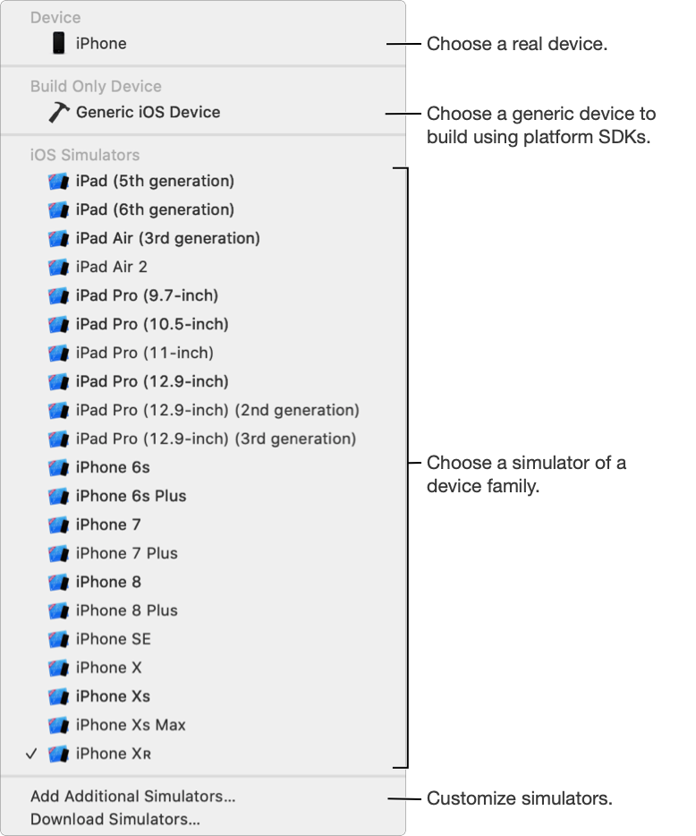
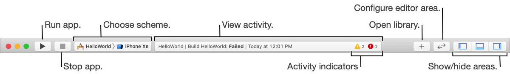
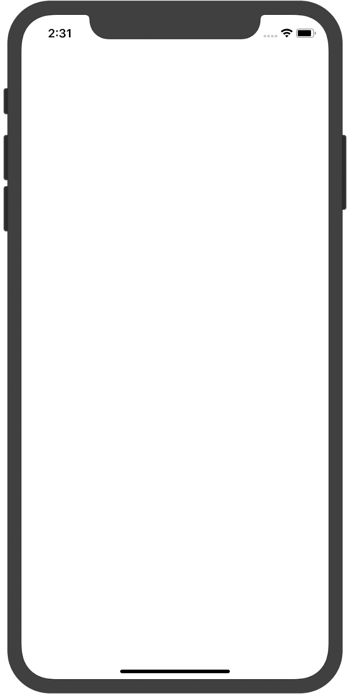
About the main window - https://help.apple.com/xcode/mac/current/#/dev84c38774c
About the editor area - https://help.apple.com/xcode/mac/current/#/dev79c94bf05
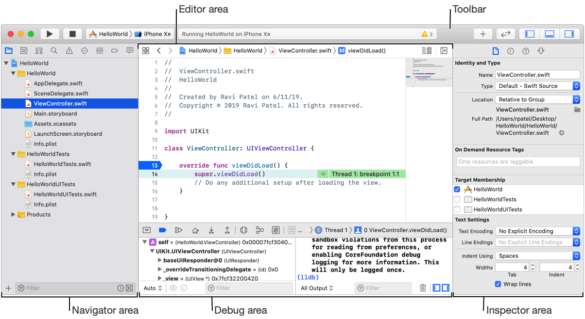
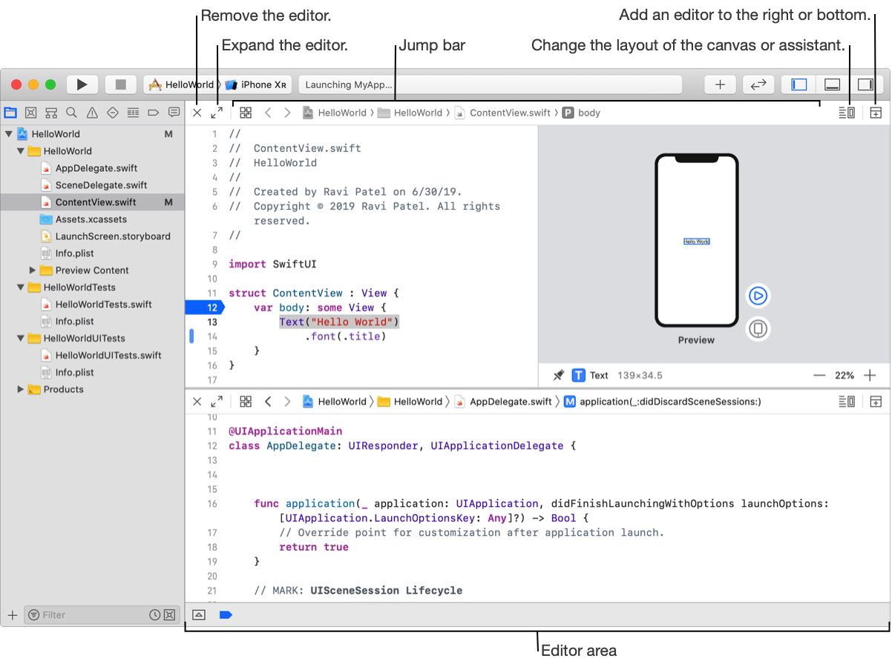
Adjust Editor Options popup menu
Show Editor Only | Shows the editor without the canvas or assistant editor | 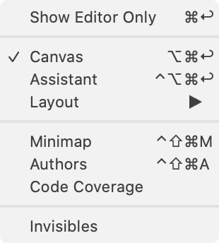 |
Canvas | For a file that uses SwiftUI, shows the editor with the canvas | |
Assistant | Opens an assistant editor | |
Layout | Choose whether to show the canvas or assistant editor on the right or below the standard editor |
Filename | Description |
AppDelegate.swift | Entry point into the application |
ViewController.swift | ViewController class containing the code for your app |
Main.storyboard | Storyboard file containing the user interface for your app |
Assets.xcassets | Stores project assets (e.g. images) |
LaunchScreen.storyboard | Storyboard file containing the launch screen for your app |
Info.plist | plist file containing key value pairs to configure the app |